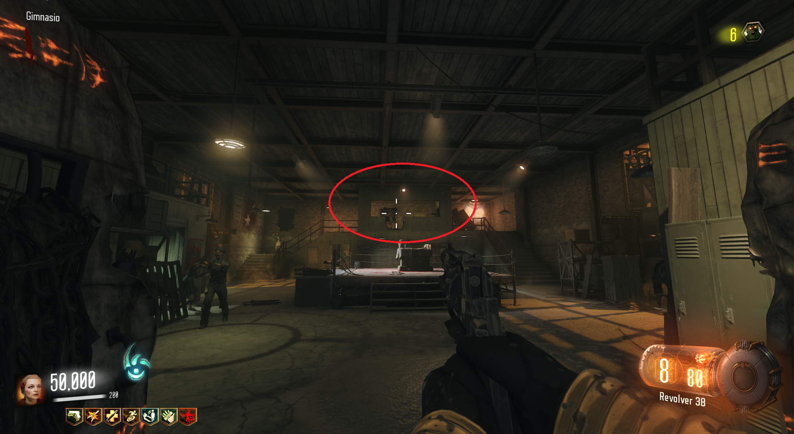
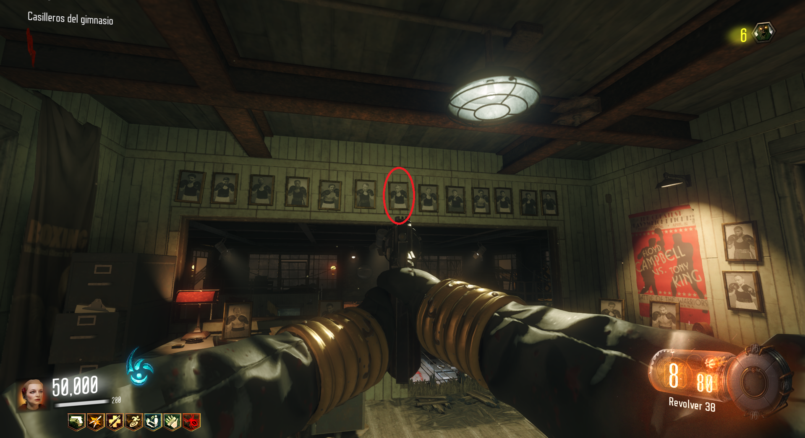
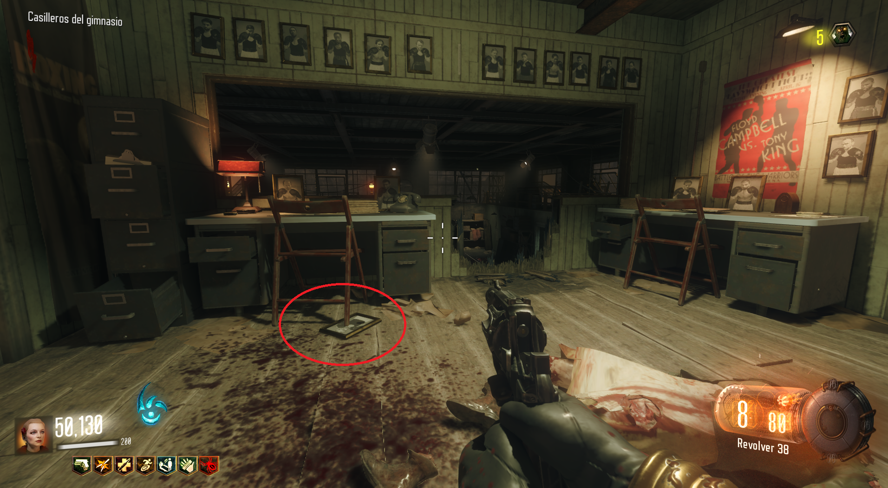
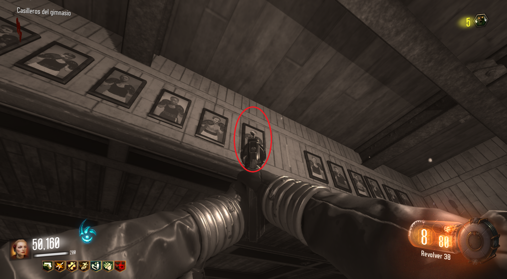

Con este truco podremos ver la pantalla en blanco y negro el resto de nuestra partida.
Tendremos que dirigirnos al ritual del gimnasio de boxeo, en Waterfront y subir a la parte alta.

Una vez allí, dispararemos al cuadro del medio.

El cuadro caerá al suelo y tendremos que situarnos justo encima de él.

Tendremos que apuntar al cuadro situado a la izquierda del que está ahora en el suelo, mientras tocamos el botón o tecla de interactuar.
De esta manera, nuestra pantalla cambiará a blanco y negro.
